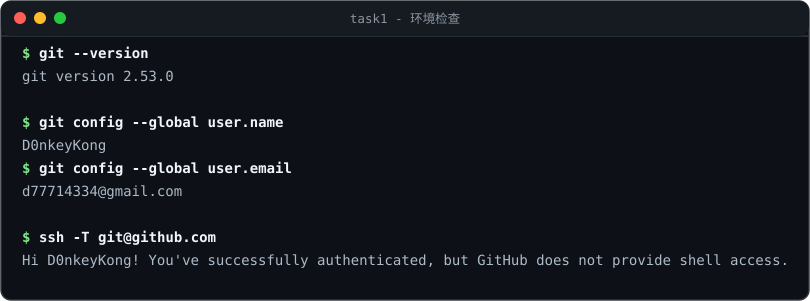
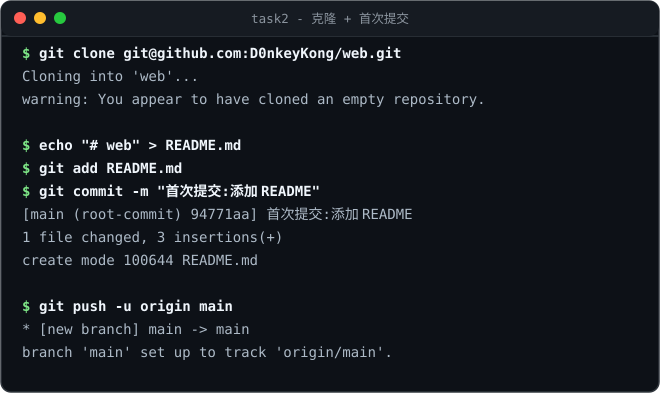
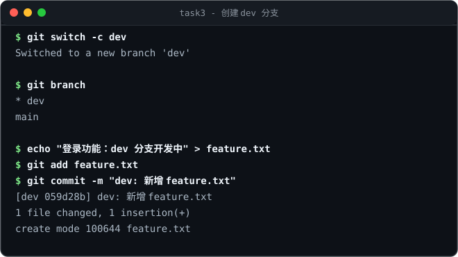
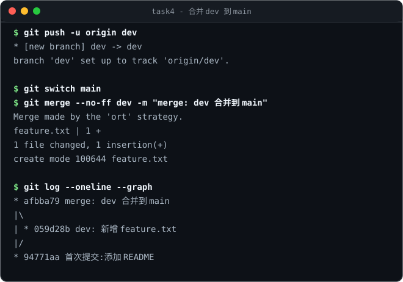
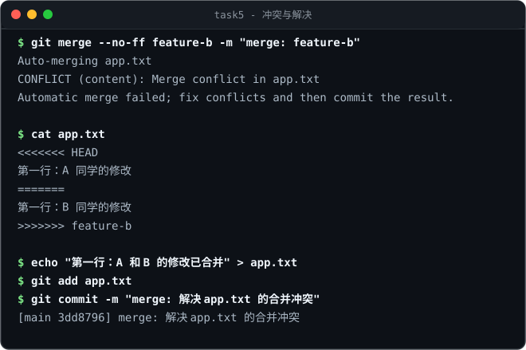
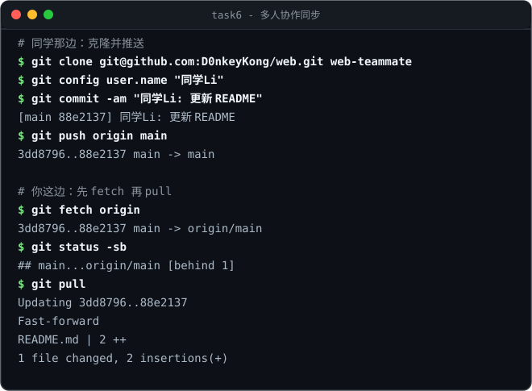
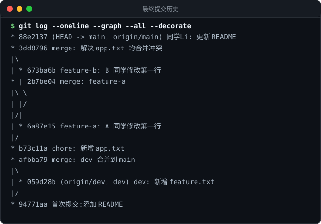

环境检查与用户配置
确认 Git 客户端已安装、全局身份配置正确，并验证 SSH 与 GitHub 的连通性。
说明
Git 提交需要记录「作者」，因此第一步是配置 user.name 与 user.email。
随后用 ssh -T git@github.com 验证公钥是否已成功绑定到 GitHub 账号。
执行命令
# 查看版本与全局配置 $ git --version $ git config --global user.name $ git config --global user.email # 验证 SSH 与 GitHub 的连通性 $ ssh -T git@github.com
运行截图

D0nkeyKong / d77714334@gmail.com；
出现 Hi D0nkeyKong! 说明 SSH 公钥配置成功（ssh -T 返回码 1 属正常，GitHub 不提供 shell）。创建远程仓库并克隆、完成首次提交
在 GitHub 新建空仓库 web，克隆到本地，添加 README 并完成第一次提交与推送。
说明
在 GitHub 网页点击 New repository 创建空仓库（不勾选 Add a README，避免首次推送冲突），
复制 SSH 地址后用 git clone 下载到本地。首次提交遵循「改文件 → add → commit → push」四步曲。
执行命令
# 1. 克隆空仓库到本地 $ git clone git@github.com:D0nkeyKong/web.git $ cd web # 2. 创建文件并完成首次提交 $ echo "# web" > README.md $ git status $ git add README.md $ git commit -m "首次提交:添加 README" # 3. 推送到远程并建立跟踪关系 $ git push -u origin main
运行截图

94771aa → 推送并跟踪 origin/main94771aa，远程新增 main 分支，本地与远程建立跟踪关系。创建 dev 分支并在其上提交
用 git switch -c 创建并切换到 dev 分支，新增功能文件并提交。
说明
分支让开发互不干扰。在 dev 上新增 feature.txt，提交只影响 dev，main 保持干净。
执行命令
# 创建并切换到 dev 分支 $ git switch -c dev $ git branch # 确认当前分支（* 号所在） # 新增文件并提交 $ echo "登录功能：dev 分支开发中" > feature.txt $ git add feature.txt $ git commit -m "dev: 新增 feature.txt"
运行截图

dev 分支，提交 059d28b059d28b dev: 新增 feature.txt。把 dev 合并到 main
先推送 dev，再回到 main，用 --no-ff 合并，保留清晰的分叉与合并历史。
说明
--no-ff（禁止快进）会强制生成一个合并提交，即使 main 没动过也能在历史中看到分支结构，便于追溯。
执行命令
# 推送 dev 分支到远程 $ git push -u origin dev # 回到 main 并合并 dev $ git switch main $ git merge --no-ff dev -m "merge: dev 合并到 main" # 查看图形化历史 $ git log --oneline --graph --all
运行截图

afbba79，可看到 |\ |/ 分叉结构afbba79 merge: dev 合并到 main，main 与 dev 均同步至远程。模拟并解决冲突
让两个分支修改同一文件的同一行，制造冲突，再手工解决并完成合并。
说明
从 main 分出 feature-a 与 feature-b，两者都修改 app.txt 的第一行。
先合并 A 成功；再合并 B 时 Git 无法自动决定保留哪一行，于是产生冲突标记：
<<<<<<< HEAD、=======、>>>>>>> feature-b。
手动改成最终内容、删除标记，add 后 commit 即完成合并。
执行命令
# 制造冲突（两个分支改同一行） $ git switch -c feature-a main # 改 app.txt 第一行 → add → commit $ git switch -c feature-b main # 改同一行 → add → commit $ git switch main $ git merge --no-ff feature-a -m "merge: feature-a" # 成功 $ git merge --no-ff feature-b -m "merge: feature-b" # 冲突！ # 解决冲突四步 $ cat app.txt # 1 查看冲突 $ echo "第一行：A 和 B 的修改已合并" > app.txt # 2 手动改成最终内容 $ git add app.txt # 3 标记已解决 $ git commit -m "merge: 解决 app.txt 的合并冲突" # 4 提交完成合并
运行截图

3dd87963dd8796 merge: 解决 app.txt 的合并冲突。
如想放弃本次合并，可用 git merge --abort。推送到远程与多人协作
推送代码，模拟另一位同学提交并推送，再通过 fetch / pull 把自己的本地仓库同步到最新。
说明
协作的核心是「别人先推，你后拉」。用一次 git fetch 只下载不改工作区（状态显示 [behind 1]），
git pull 等于 fetch + merge，真正把更新合并进工作区。新版 Git 需先设置
pull.rebase false，否则 pull 会报错。
执行命令
# 建议先设置 pull 策略 $ git config --global pull.rebase false # 同学那边：克隆 → 修改 → 提交 → 推送 $ git clone git@github.com:D0nkeyKong/web.git web-teammate $ git config user.name "同学Li" $ git commit -am "同学Li: 更新 README" $ git push origin main # 你这边：先 fetch 查看，再 pull 同步 $ git fetch origin $ git status -sb # → ## main...origin/main [behind 1] $ git pull # = fetch + merge，真正同步
运行截图

88e2137；你侧 fetch 后显示 behind 1，pull 快进合并完成同步88e2137 并推送；本地 fetch → status → pull 后与远程完全一致。最终提交历史总览
一条命令看清全部分支、分叉、合并与协作提交。
$ git log --oneline --graph --all --decorate

任务完成总览
| 任务 | 内容 | 关键提交 / 命令 | 状态 |
|---|---|---|---|
| 1 | 注册账号、安装 Git、配置用户信息 | git config --global user.name/email、ssh -T git@github.com | 完成 |
| 2 | 创建远程仓库 → 克隆 → 首次提交 | 94771aa 首次提交:添加 README | 完成 |
| 3 | 创建 dev 分支并提交 | 059d28b dev: 新增 feature.txt | 完成 |
| 4 | 把 dev 合并到 main | afbba79 merge: dev 合并到 main | 完成 |
| 5 | 模拟并解决冲突 | 3dd8796 merge: 解决 app.txt 的合并冲突 | 完成 |
| 6 | 推送远程 + 多人协作同步 | 88e2137 同学Li: 更新 README、fetch/pull | 完成 |
常用命令速查
查看与配置
git --versiongit config --global --listgit remote -vgit branch -a提交三步曲
git statusgit add .git commit -m "说明"git push分支与合并
git switch -c devgit switch maingit merge --no-ff devgit branch -d dev远程协作
git clone <url>git fetch origingit pullgit push -u origin main撤销与暂存
git restore <file>git restore --staged <file>git stashgit stash pop查看历史
git log --oneline --graph --all --decorategit diffgit diff --staged